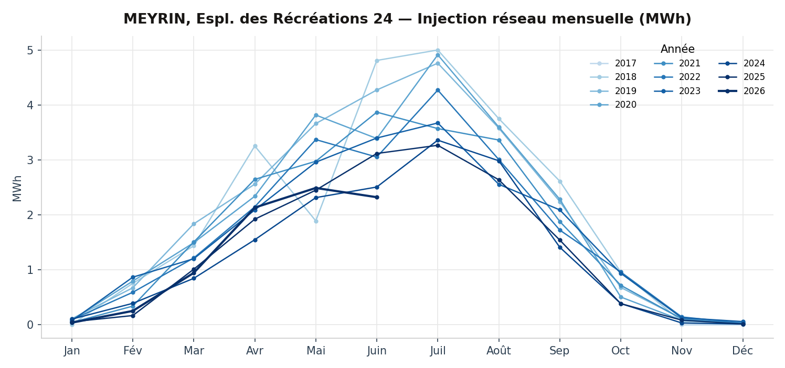
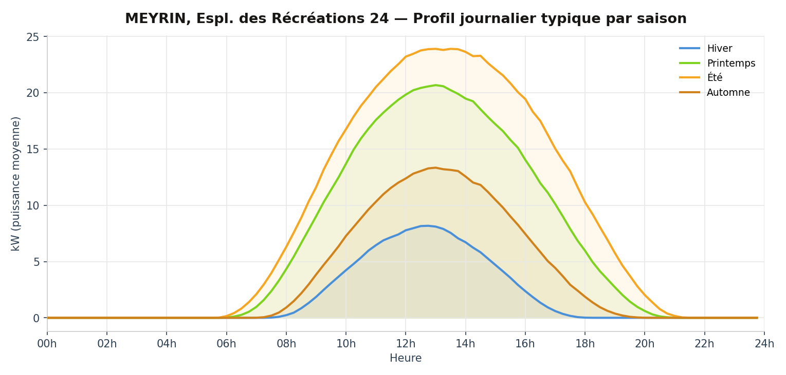
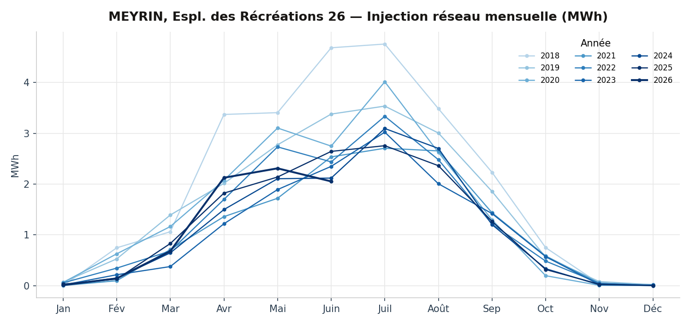
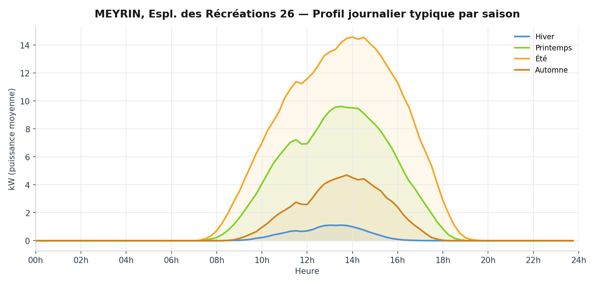
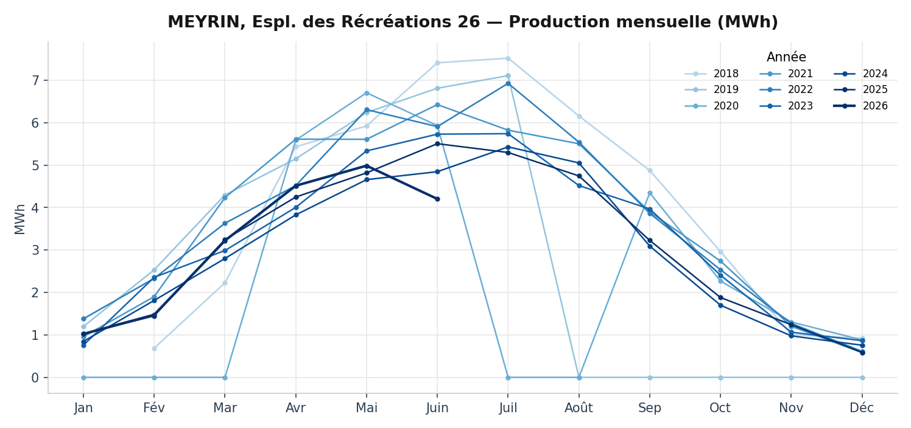
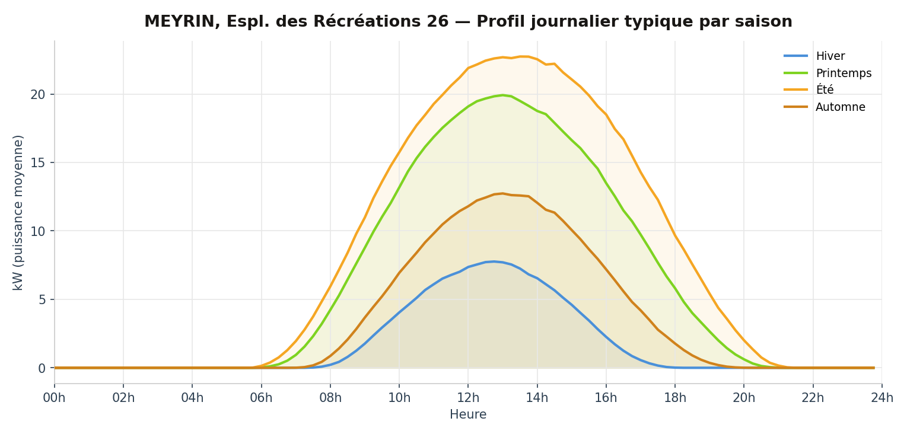
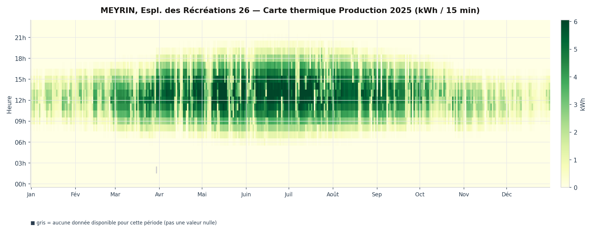

Installation 02 — Meyrin
Espl. des Récréations
24 & 26
1217 Meyrin — en service depuis 2017 — réalisée par Solstis SA
- Puissance
- 121 kWc
- Surface
- 740 m²
- Production
- 130 000 kWh/an
- Coût
- 200 000 CHF
- Rétribution unique
- 55 000 CHF

La fiche complète
Les installations.
La coopérative Enerko a financé les installations photovoltaïques sur les toitures des trois bâtiments de la coopérative équilibre, à la promenade de l'Aubier 19-20-21. La coopérative Enerko a également monté et gère l'exploitation des trois communautés d'autoconsommateurs au sein des bâtiments, ceci afin de maximiser l'autoconsommation de l'électricité solaire produite en toiture.
L'installation PV
Ces installations se composent au total de 447 modules polycristallins (Canadian Solar 270 Wc) pour une puissance totale de 121 kWc. Les modules PV sont disposés sur les toitures plates soit en dômes Est-Ouest, soit en shed orientés Sud-Ouest (45°), à 10° d'inclinaison. Six onduleurs SMA (Sunny Tripower 25000TL/20000TL/5000TL), positionnés en toiture, transforment le courant continu en courant alternatif utilisable dans le bâtiment et compatible avec le réseau électrique. La production d'électricité solaire annuelle se monte à 140'000 kWh, soit l'équivalent de la consommation d'environ 50 logements genevois.
Investissement porté par la coopérative Enerko.
Les communautés d'autoconsommateurs
Tous les locataires (ménages et activités), ainsi que les consommateurs techniques (pompe à chaleur, ventilation, communs d'immeubles, etc.) sont regroupés dans une communauté d'autoconsommateurs. La coopérative Enerko est la représentante de la communauté vis-à-vis de SIG, donc elle reçoit de la part de SIG une facture globale électrique, qu'elle refacture à chaque membre selon sa propre consommation électrique au tarif du produit soutiré (Vitale Bleu tarif double).
Du fait de la configuration des installations électriques, la consommation instantanée d'électricité PV est priorisée par rapport à l'électricité provenant du réseau électrique. Ce regroupement permet ainsi d'autoconsommer plus de la moitié de la production PV. L'électricité PV couvre environ un tiers de la consommation électrique totale des bâtiments.
Enerko identifie trois bâtiments sur ce site (promenade de l'Aubier 19-20-21), mais SIG les relève via deux points de comptage distincts, rattachés aux adresses Esplanade des Récréations 24 et 26. Les données mesurées ci-dessous sont donc présentées par bâtiment (24 puis 26), et non par les trois bâtiments identifiés par Enerko.
La transparence en pratique
Les données mesurées
Relevés SIG au pas de 15 minutes, présentés par point de comptage.
Bâtiment 24
Injection réseau


Production PV
Trous : 2019-08-01 → 2020-03-31 (244 j) · 2020-07-01 → 2020-08-31 (62 j)

Bâtiment 26
Injection réseau


Production PV
Trous : 2019-08-01 → 2020-03-31 (244 j) · 2020-07-01 → 2020-08-31 (62 j) — anomalie de données signalée sur cette série, en cours de vérification avec SIG.



Ces toits appartiennent à leurs coopérateurs.
Le prochain pourrait vous appartenir aussi.